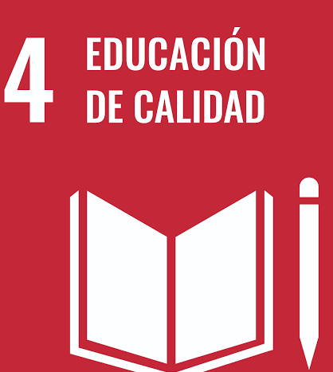
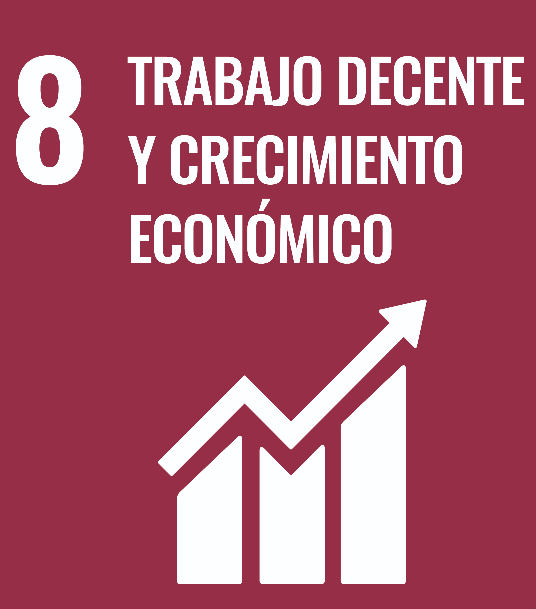
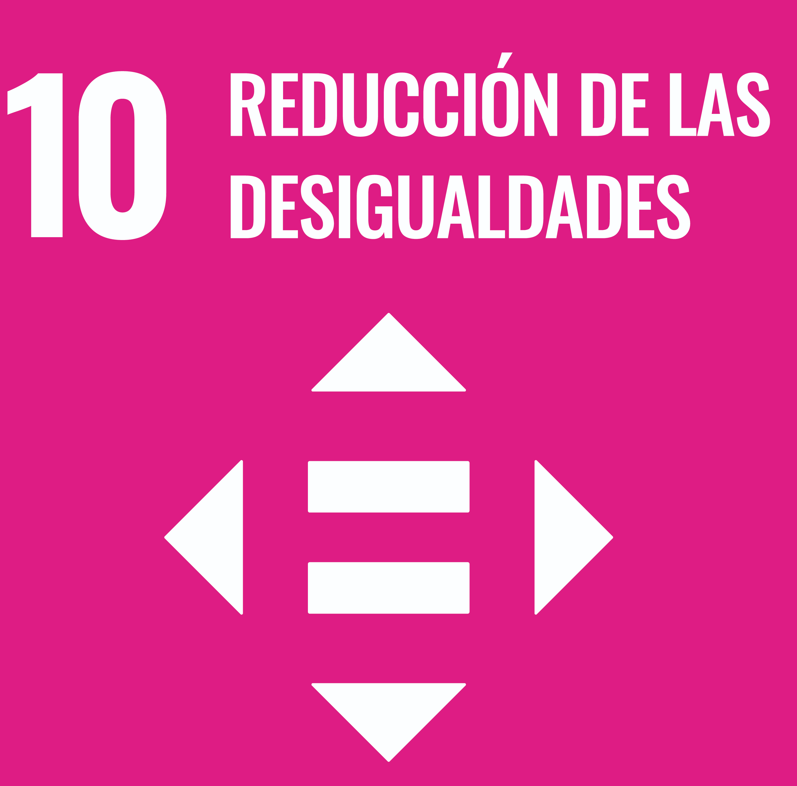
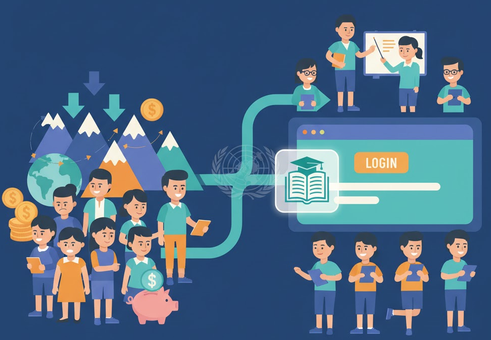
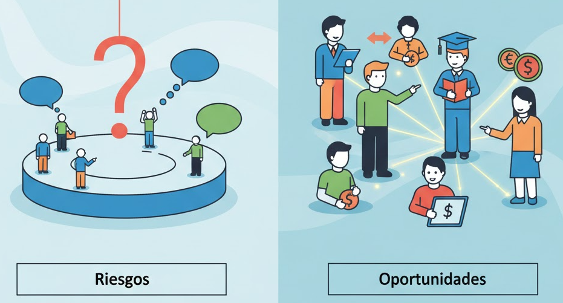
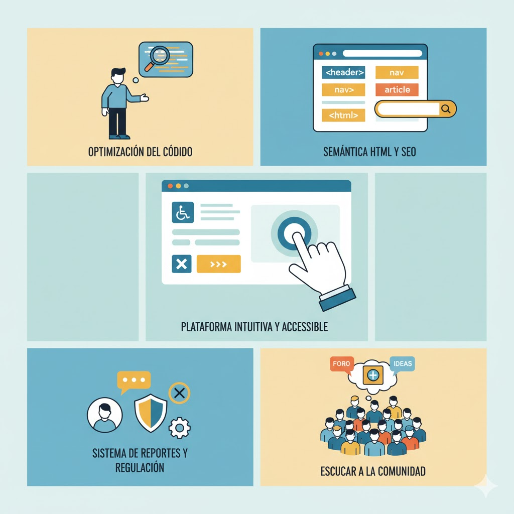

¿Qué ODS están directamente relacionados con vuestro producto?
- ODS 4: Nuestro producto se relaciona con este ODS ya que permite una mejora en la educación permitiendo el acceso al conocimiento o al refuerzo de este mediante el contacto con los profesores de nuestra plataforma.
- ODS 8: Nuestro producto se relaciona con este ODS ya que ofrece a los profesores una opción viable y una fuente de ingresos ya sea la única o una adicional respecto a su trabajo principal.
- ODS 10: Nuestro producto permite disminuir la desigualdad comparando a las familias que se pueden permitir la contratación de profesores particulares respecto a las que no, permitiendo que todos los estudiantes puedan acceder a este tipo de servicios de una manera gratuita y accesible.



¿Por qué esos ODS son relevantes para la actividad profesional en el sector tecnológico?
Son importantes porque permitiría la entrada al sector a todos aquellos estudiantes que, por dificultades geográficas o económicas no sean capaces de acceder a formación relacionada con el sector, con nuestra plataforma estos alumnos solo tendrían que registrarse y encontrar docentes que impartan los contenidos que se desean aprender.

¿Qué riesgos y oportunidades supone vuestro producto desde el punto de vista de la sostenibilidad?
Riesgos: Debe de haber suficientes alumnos y profesores como para mantener activa la plataforma.
Oportunidades: Permite que personas que necesitan más ayuda en su educación puedan acceder a profesores que les puedan ayudar y para los profesores es una manera de ganar un sustento económico flexible al desempeño en la plataforma.

¿Qué acciones concretas podéis aplicar como desarrolladores para mejorar su impacto?
- Optimizar al máximo el código de la plataforma.
- Utilizar la semántica de HTML para mejorar el SEO y permitir un mayor impacto en la página.
- Hacer la plataforma lo más intuitiva posible para que sea lo más accesible posible.
- Regular a los usuarios mediante un sistema de reportes para evitar problemas con profesores o alumnos que no siguen las directrices de nuestra plataforma.
- Escuchar a la comunidad y agregar funciones en base a los comentarios de esta, para aumentar la satisfacción del público y darles a entender que su opinión es importante para nosotros.
